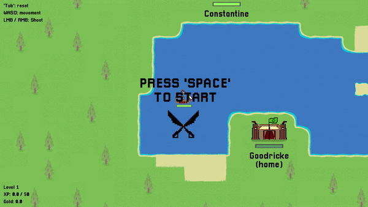

YorKorsairs | Team 10
This is the homepage for the YorKorsairs Engineering 1 Group Project!
The deliverables and documentation can be accessed through the Organisation tab, while other tabs such as Versions and Resources provide access to other section of our deliverables.
If you would like to download the game, use the download button in top right.
